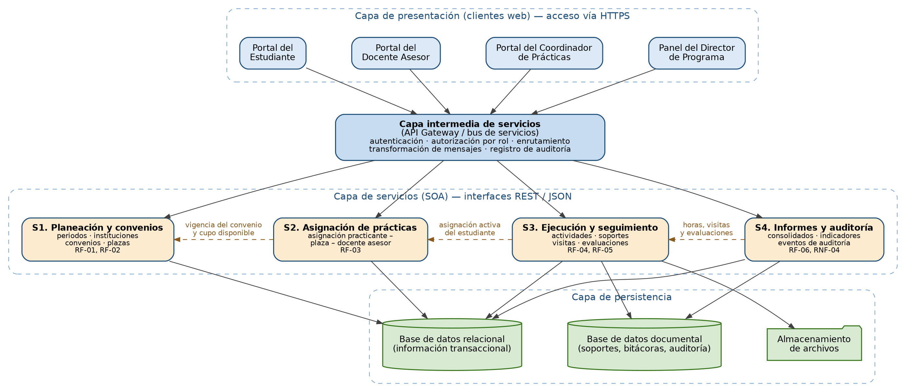
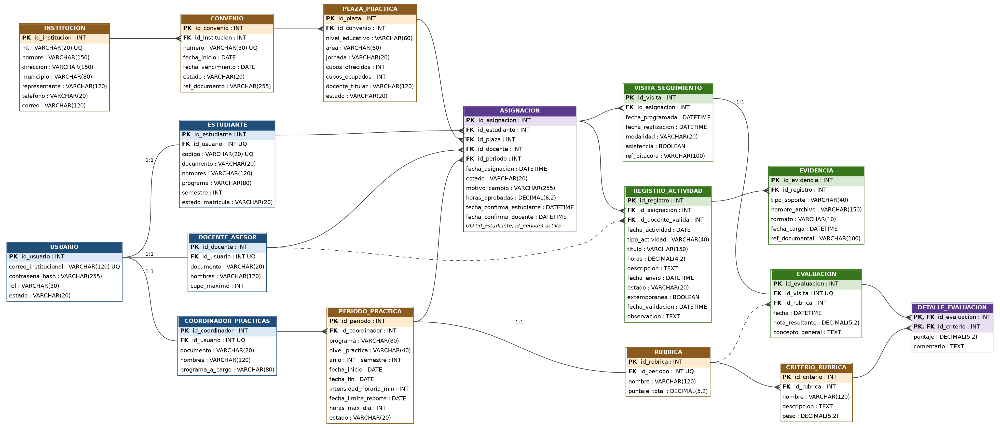
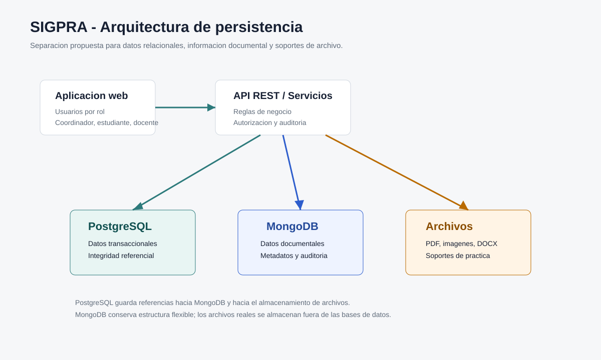
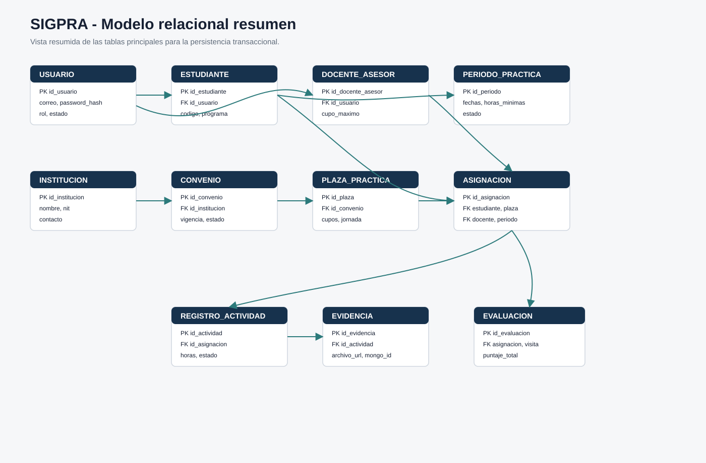

casos de uso documentados
Software Integral de Gestion de Practicas Academicas
SIGPRA centraliza la gestion de practicas academicas en una aplicacion web por roles.
El proyecto organiza la programacion del periodo, convenios, plazas, asignaciones, registro de actividades, evidencias, validacion docente, seguimiento, evaluacion y consulta consolidada del proceso.
roles principales del sistema
componentes de persistencia
pantallas principales en Figma
Entregables
Documentos principales del proyecto
Accesos directos a los archivos actuales y a los anexos tecnicos ya organizados.
Casos de uso
Flujo funcional cubierto
Los prototipos y documentos se alinean con estos siete casos.
Prototipos
Mediana fidelidad en Figma
El archivo esta separado por paginas: flujo general y un prototipo por cada caso de uso.
Contenido del archivo
- Vista general del prototipo.
- Flujo general de navegacion.
- Pantallas CU-01 a CU-07 por separado.
- Formularios, tablas, estados y acciones principales.
Arquitectura y modelos
Diagramas disponibles
Imagenes actuales del proyecto y diagramas nuevos de persistencia.




Base de datos
Persistencia propuesta
La base de datos quedo documentada en una carpeta independiente para no mezclarla con la propuesta.
PostgreSQL
Datos relacionales: usuarios, estudiantes, convenios, plazas, periodos, asignaciones, actividades y evaluaciones.
Ver script SQLMongoDB
Datos flexibles: metadatos de evidencias, bitacoras de visitas y eventos de auditoria.
Ver coleccionesArchivos
Soportes reales: PDF, imagenes, documentos firmados y anexos asociados a la practica.
Ver reglasRevision de completitud
Lo que ya esta y lo que falta para una pagina completa
Ya incluido
- Propuesta corregida y version Markdown.
- Casos de uso en Astah.
- Prototipos Figma enlazados.
- Diagramas de arquitectura y modelo relacional.
- Documento y scripts de base de datos.
- Tareas de base de datos.
Recomendado para completar mas adelante
- Capturas PNG exportadas desde Figma por cada pantalla.
- Pagina o video corto de demostracion del prototipo.
- Documento de instalacion cuando exista codigo funcional.
- Casos de prueba y matriz de validacion por requerimiento.
- Despliegue web si el docente pide una URL publica.